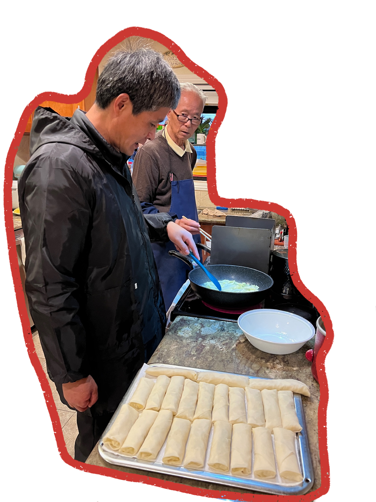

Egg Rolls
Shatteringly crisp egg roll wrappers filled with juicy marinated pork, tender napa cabbage, and earthy shiitake mushrooms.
Listen to my mom share this recipe:
Ingredients
24 Servings
For the pork and marinade:
0.67 cup
Finely shredded lean pork
0.25 tsp
Salt
0.5 tsp
Sesame oil
1 tsp
Shaoxing wine
0.5 tsp
Cornstarch
0.25 tsp
White pepper
To assemble the filling:
1 small
Napa cabbage, finely shredded
8
Dried shiitake mushrooms, soaked and thinly sliced
4 tbsp
Oil
1 to taste
Salt
1 to taste
White pepper
2 tbsp
Shaoxing wine
0.5 tbsp
Soy sauce
1.5 tbsp
Cornstarch
2 tsp
Sesame oil
24
Spring roll wrappers
Oil for frying
Instructions
- Mix the pork with the marinade ingredients and let sit for 20-30 minutes. Shred the cabbage and slice your mushrooms.
- Over medium heat, add 4 tablespoons of oil to your wok. Brown the pork. Then add the mushrooms and cook for another couple of minutes until fragrant. Add the napa cabbage and stir well. Season with salt, white pepper, shaoxing wine, and soy sauce. Stir everything together, cover the lid and let it cook over high heat for 2 - 3 minutes, or until the cabbage is wilted.
- Uncover the lid and add the cornstarch slurry. Stir. The mixture will start to thicken. You don’t want there to be extra liquid in the mixture, so add more of the cornstarch/water mixture if need be. Lastly, add sesame oil and stir everything thoroughly. Turn off the heat and let the mixture cool completely.
- The key to wrapping spring rolls is making sure that they’re really tight and not overstuffed. Place the wrapper in front of you so that a corner is facing toward you. Use about one and a half tablespoons of the mixture per spring roll, spoon it about an inch and a half from the corner closest to you. Roll it over once, and like you’re making a burrito, fold over both sides. Continue rolling it into a cigar shape. With your fingers, brush a bit of water to the closing corner of the wrap to seal it. Place each roll on a tray seam-side down. This recipe makes about 25 spring rolls (you can also prepare them ahead of time and freeze them).
- To fry the spring rolls, use a small pot or shallow pan (which requires less oil) and fill it with oil until it’s about 1-inch deep, just enough to submerge the spring rolls when frying. Heat oil slowly over medium heat. To tell if the oil is ready, I just dip a bamboo chopstick into the hot oil, and if some bubbles form around the chopstick, then the oil is ready. Slowly add the spring rolls one at a time, and fry them in small batches. Cook each side until golden brown and drain on a paper towel. We like to serve them with some Chinese black vinegar for dipping!